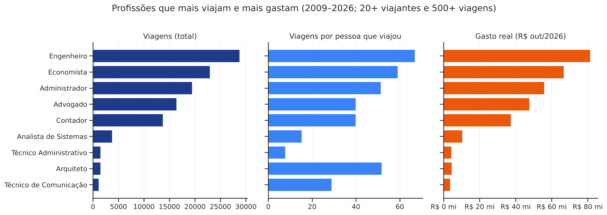
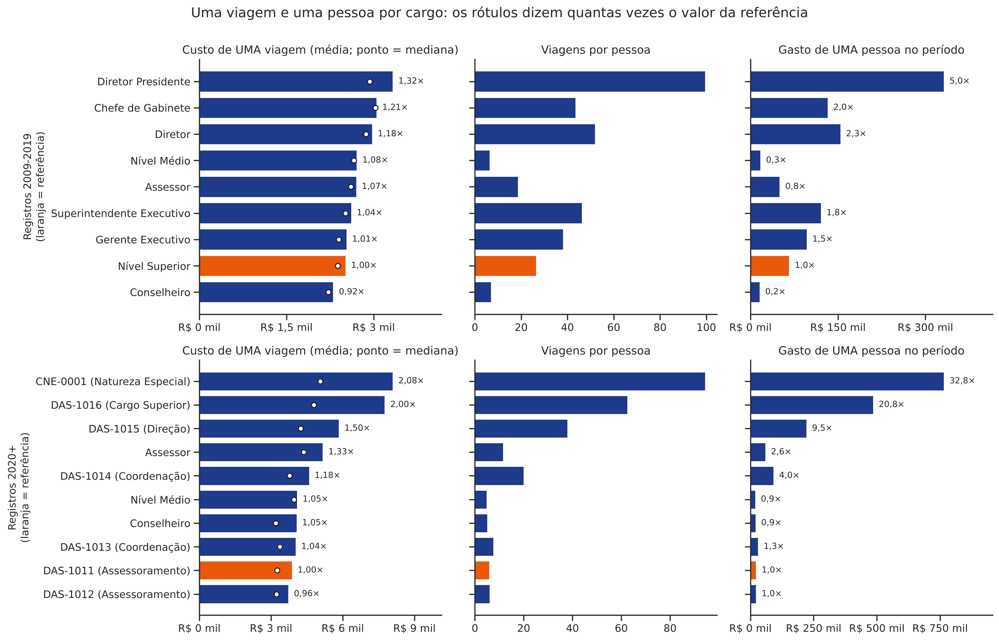
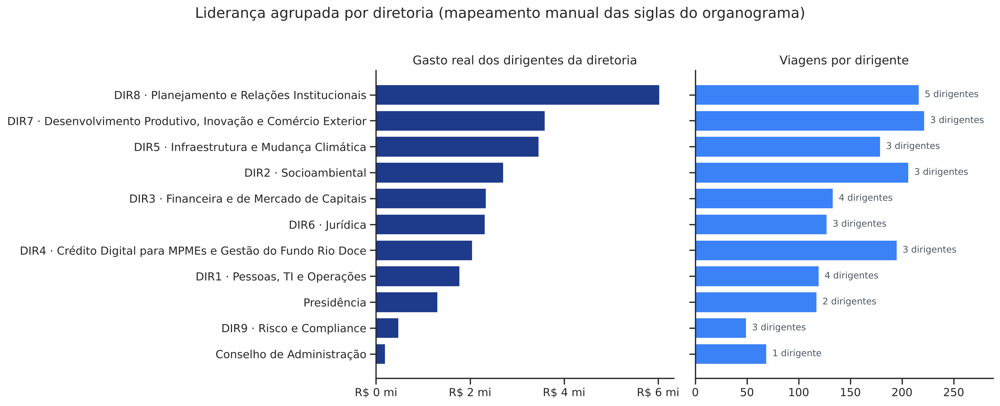
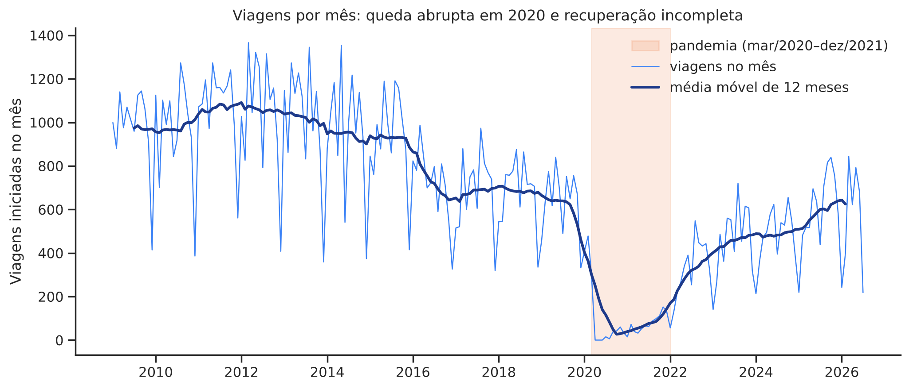
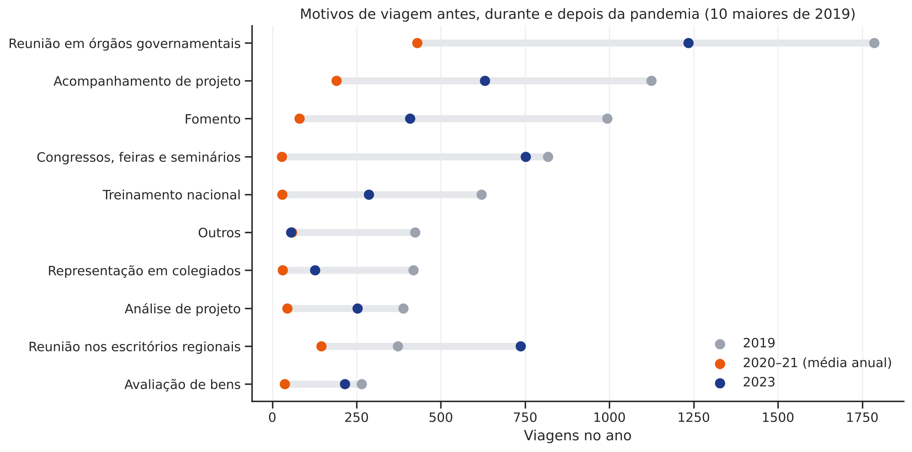
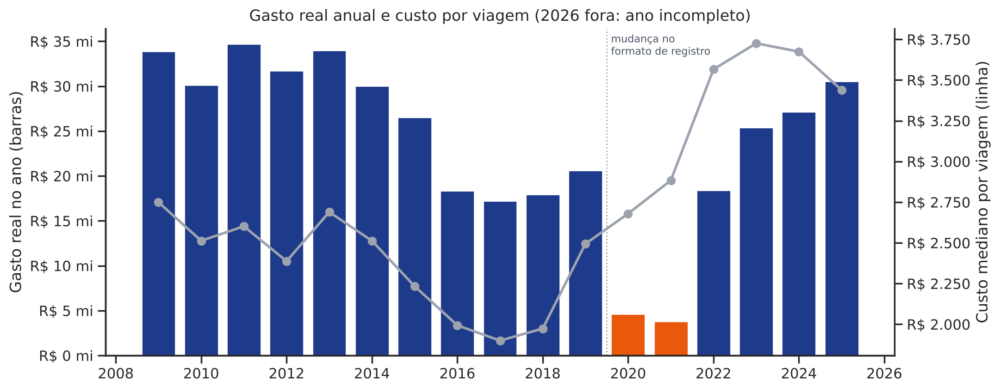

Despesas de viagem do BNDES (2009–2026): quem viaja, quem gasta e o efeito da pandemia de COVID-19
Dica: clique no nome de cada autora para descobrir um tema secreto ✨
Centro Universitário La Salle do Rio de Janeiro (UniLaSalle-RJ) · Bacharelado em Sistemas de Informação · 6º período · 2026.2Linguagem de Programação (Análise e Visualização de Dados com Python)
Código MIT · dados ODbL 1.0 · texto CC BY 4.0 · Python 3.13 · FAIR

© Sanrio · imagem de sanrio.co.jp

© Sanrio · imagem de sanrio.co.jp
Resumo
Viagens a serviço são um custo recorrente de bancos públicos e um indicador de como suas equipes trabalham. Este estudo analisa 144.930 viagens de 5.480 empregados e dirigentes do Banco Nacional de Desenvolvimento Econômico e Social (BNDES) realizadas entre 2009 e 2026, publicadas no portal de dados abertos do banco. Um pipeline em Python (pandas e numpy) trata dois formatos de registro que convivem no mesmo arquivo, agrega 303.868 trechos em viagens, corrige os valores pelo IPCA e cruza as viagens com a base de empregados e o organograma para identificar profissão, cargo e área. Engenheiros são o grupo que mais viaja e mais gasta, com 67 viagens por pessoa e 26% do gasto real, seguidos de economistas e administradores. Entre os cargos, a diferença está mais na frequência do que no preço: até 2019, uma viagem de diretor equivalia a 1,18 viagem de nível superior, mas cada diretor gastou 2,3 vezes mais. O gasto é concentrado: 10% das pessoas respondem por 57% do total (Gini = 0,75). A pandemia reduziu as viagens em 82% em 2020 e 88% em 2021 frente a 2019, sem nenhum registro entre abril e junho de 2020. Congressos e treinamentos foram os motivos mais afetados, enquanto as reuniões nos escritórios regionais quase dobraram depois da crise. Em 2025 o volume ainda está 6% abaixo de 2019, mas cada viagem custa 38% mais em termos reais. Os resultados indicam que o banco não voltou ao padrão anterior: viaja-se menos e de forma mais cara.
Palavras-chave: dados abertos; BNDES; despesas de viagem; COVID-19; análise exploratória de dados; princípios FAIR.
1. Introdução
O BNDES financia projetos em todo o país, e boa parte desse trabalho exige deslocamento: acompanhar obras, analisar empresas, reunir-se com governos e participar de eventos do setor. Desde 2009 o banco publica cada trecho dessas viagens, com datas, motivo e valores, o que permite observar não só quanto se gasta, mas quem viaja e para quê.
A pandemia de COVID-19 interrompeu de forma abrupta essa rotina e acelerou a adoção de reuniões remotas. Medir quanto dessa mudança permaneceu depois da crise ajuda a entender se as viagens a serviço voltaram ao padrão anterior ou se o trabalho a distância substituiu parte delas de forma duradoura.
O estudo responde a três perguntas de pesquisa:
- RQ1. Quais grupos de empregados (profissão, cargo e área) mais viajam?
- RQ2. Quais grupos concentram o maior gasto com viagens?
- RQ3. Como a pandemia de COVID-19 (março de 2020 a dezembro de 2021) alterou o volume, os motivos e o custo das viagens?
2. Metodologia e pipeline de dados
2.1 Fontes e granularidade
A base principal é o conjunto Despesas viagens do portal de dados abertos do BNDES (BNDES, 2026a), com 303.868
linhas, uma por trecho, de janeiro de 2009 a julho de 2026. Como ela não informa o setor de quem viajou,
foi cruzada com duas outras bases do mesmo portal: Empregados e Estagiários (BNDES, 2026b), que traz a profissão
(cargo de formação) e a função de 3.419 pessoas, e o Organograma (BNDES, 2026c), única base pública com a
lotação, restrita aos 34 dirigentes atuais. Os valores foram corrigidos pelo IPCA mensal obtido na API do Sistema
Gerenciador de Séries Temporais do Banco Central (BANCO CENTRAL DO BRASIL, 2026). Todas as fontes são acessadas com a
biblioteca requests, sem cadastro ou chave.
2.2 Tratamento
O arquivo de viagens, em codificação latin-1 com separador ponto e vírgula, mistura dois formatos de registro.
Até 2019, as datas são ISO e os números usam ponto decimal, com o número de diárias multiplicado por 100; a partir de 2020,
datas e números seguem o padrão brasileiro (3.902,57). Uma conversão única multiplicaria os valores antigos por
100. O pipeline identifica o formato de cada linha pela data e aplica a regra correspondente:
legado = df["datapartidaorigem"].str.contains("-", na=False) # 2009-2019 usa data ISO
for coluna in COLUNAS_VALOR:
convertido = pd.Series(np.nan, index=df.index)
convertido[legado] = pd.to_numeric(df.loc[legado, coluna], errors="coerce") # '358.62'
convertido[~legado] = _numero_brasileiro(df.loc[~legado, coluna]) # '3.902,57'
df[coluna] = convertido
df.loc[legado, "numerodiarias"] = df.loc[legado, "numerodiarias"] / 100 # '300' = 3 diárias
Com essa regra, passagens, diárias e acréscimos somam exatamente o valor total em 100% das viagens de 2009–2019, e a diária
mediana é de R$ 190 nos dois períodos, o que confirma a conversão. O segundo cuidado é a unidade de análise: valor total,
hospedagem e locação são da viagem e se repetem em cada trecho. Somar por linha inflaria o gasto em 144%, por isso os
trechos são agregados por codigoviagem antes de qualquer soma:
viagens = trechos.groupby("codigoviagem").agg(
data_partida=("datapartidaorigem", "min"),
valor_passagens=("valorpassagem", "sum"), # por trecho: soma
valor_diarias=("valordiariastrecho", "sum"),
valor_total=("valortotalviagemptpbndes", "max"), # da viagem: repetido em cada trecho
)
Setor mapeado manualmente. O portal não oferece uma tabela de setores: o organograma informa apenas a sigla
da lotação de cada dirigente (ASC, DIR7...), e as bases de viagens e de empregados não trazem setor. Por isso o nome de cada
área e a diretoria a que ela pertence foram digitados à mão no código, a partir do Organograma Geral e da página
Quem é quem no BNDES (BNDES, 2026d), em dois dicionários (AREAS e DIRETORIAS) que cobrem as 34 siglas.
O pipeline interrompe a execução se surgir uma sigla sem mapeamento, de modo que uma reestruturação do banco não passe despercebida.
Os motivos foram normalizados (maiúsculas, sem acento), e o primeiro motivo listado foi adotado quando o registro traz
vários. Rótulos que mudaram de nome em 2020 para a mesma atividade (Treinamento centralizado e Treinamento no
Brasil) foram unificados como Treinamento nacional; sem isso, a categoria pareceria ter sido extinta pela pandemia.
O cruzamento com as bases de empregados e organograma é feito pelo nome normalizado, porque a base de viagens não traz
matrícula. Logo depois do cruzamento, nome e CPF (já parcialmente mascarado na fonte) são substituídos por um pseudônimo
(SHA-256), e a base tratada é gravada em data/processed/viagens.csv.gz.
Nenhuma linha é removida em silêncio. As 780 viagens de valor zero, as 152 com total divergente entre trechos e as 6.219
acima de Q3 + 1,5·IQR (calculado dentro de cada formato) ficam sinalizadas, e cada contagem é registrada em
etl_log.json. Os valores monetários são apresentados a preços de outubro de 2026.
2.3 Quebras na série
A mudança de formato em 2020 traz outras duas quebras. Os códigos de cargo mudam por completo (até 2019 predominam Nível Superior e Gerente Executivo; depois, códigos DAS), por isso o cargo é analisado separadamente em cada período, e a profissão, que é fixa por pessoa, é a dimensão usada para comparar todo o intervalo. Além disso, a partir de 2020 os componentes detalhados deixam de fechar o valor total (só 32% das viagens fecham), e viagens internacionais passam a ser registradas. Como essa quebra coincide com o início da pandemia, a RQ3 usa o número de viagens como medida principal e trata o custo com cautela.
3. Resultados e discussão
3.1 Visão geral e concentração do gasto
No período, o BNDES realizou 144.930 viagens, com gasto de R$ 421 milhões em valores reais (R$ 261 milhões nominais). A viagem típica é curta: dois trechos, ida e volta, e duas diárias. O valor total acompanha principalmente a passagem (correlação de Pearson de 0,89 nas viagens de 2020 em diante) e, em seguida, as diárias (0,73); a hospedagem quase não se relaciona com o total (0,06), porque vem zerada na maior parte dos registros. O custo, portanto, é puxado pelo deslocamento.
O gasto é concentrado em poucas pessoas. A Figura 1 mostra a curva de Lorenz do gasto acumulado por pessoa: os 10% que mais gastam respondem por 57% do total, e o índice de Gini é 0,75. Essa concentração é coerente com a natureza do trabalho: uma parcela das equipes acompanha projetos fora da sede de forma recorrente, enquanto a maioria viaja ocasionalmente.

3.2 RQ1 e RQ2: quem viaja e quem gasta mais
Por profissão. A profissão foi identificada em 75,8% das viagens; a cobertura varia de 59% em 2009 a 88% em 2026, porque a base de empregados só inclui quem está no banco hoje. Engenheiros lideram em todas as medidas (Tabela 1 e Figura 2): são o grupo com mais viagens, mais viagens por pessoa e maior gasto. Economistas e administradores vêm em seguida. As cinco carreiras técnicas de análise e acompanhamento de projetos somam 92% do gasto com profissão identificada, enquanto analistas de sistemas e técnicos administrativos, apesar de numerosos no quadro, viajam pouco.
| Profissão | Viagens | Pessoas que viajaram | Viagens por pessoa | Gasto real (R$ mi) | % do gasto |
|---|---|---|---|---|---|
| Engenheiro | 28.779 | 430 | 66,9 | 81,4 | 26,0% |
| Economista | 22.971 | 389 | 59,1 | 66,8 | 21,3% |
| Administrador | 19.471 | 379 | 51,4 | 55,9 | 17,8% |
| Advogado | 16.420 | 411 | 40,0 | 47,6 | 15,2% |
| Contador | 13.746 | 344 | 40,0 | 37,4 | 11,9% |
| Analista de Sistemas | 3.791 | 248 | 15,3 | 10,4 | 3,3% |
Tabela 1: Viagens e gasto real por profissão, 2009–2026 (viagens com profissão identificada).

Por cargo. Na base de viagens, o cargo descreve o nível na estrutura. Até 2019, profissionais de Nível Superior fizeram 58,3 mil viagens (R$ 146 milhões) e Gerentes Executivos, 39,5 mil (R$ 100 milhões). A partir de 2020, com a nova codificação, o maior grupo é DAS-1011 (assessoramento), com 14,1 mil viagens e R$ 55 milhões (Figura 3). Nos dois períodos, os cargos de base respondem pela maior parte do volume, e os de direção, pelos maiores custos por viagem.

O total por cargo, porém, reflete sobretudo o tamanho de cada grupo: 2.189 pessoas viajaram como Nível Superior até 2019, contra 41 diretores. Para comparar os cargos de igual para igual, a Tabela 2 e a Figura 4 calculam o custo de uma viagem e o gasto de uma pessoa, e expressam cada cargo em múltiplos de um cargo de referência (Nível Superior até 2019; DAS-1011 a partir de 2020). Até 2019, uma viagem de Diretor custava em média R$ 2.977, o equivalente a 1,18 viagem de Nível Superior (R$ 2.519): a diferença por viagem é pequena. O que separa os cargos é a frequência. Cada diretor viajou 52 vezes no período, contra 26,5 de um profissional de Nível Superior, e por isso gastou R$ 155 mil, 2,3 vezes mais. O Diretor Presidente chega a 99,6 viagens e R$ 332 mil por pessoa, cinco vezes a referência.
| Cargo | Custo médio de 1 viagem | = viagens da referência | Viagens por pessoa | Gasto por pessoa | = pessoas da referência |
|---|---|---|---|---|---|
| 2009–2019 (referência: Nível Superior) | |||||
| Diretor Presidente | R$ 3.333 | 1,32 | 99,6 | R$ 332 mil | 5,0 |
| Diretor | R$ 2.977 | 1,18 | 52,0 | R$ 155 mil | 2,3 |
| Superintendente Executivo | R$ 2.617 | 1,04 | 46,3 | R$ 121 mil | 1,8 |
| Gerente Executivo | R$ 2.536 | 1,01 | 38,3 | R$ 97 mil | 1,5 |
| Nível Superior | R$ 2.519 | 1,00 | 26,5 | R$ 67 mil | 1,0 |
| 2020 em diante (referência: DAS-1011) | |||||
| DAS-1016 (Cargo Superior) | R$ 7.767 | 2,00 | 62,6 | R$ 487 mil | 20,8 |
| DAS-1015 (Direção) | R$ 5.847 | 1,50 | 38,1 | R$ 223 mil | 9,5 |
| DAS-1014 (Coordenação) | R$ 4.600 | 1,18 | 20,2 | R$ 93 mil | 4,0 |
| DAS-1013 (Coordenação) | R$ 4.040 | 1,04 | 7,7 | R$ 31 mil | 1,3 |
| DAS-1011 (Assessoramento) | R$ 3.890 | 1,00 | 6,0 | R$ 23 mil | 1,0 |
Tabela 2: Custo de uma viagem e gasto de uma pessoa por cargo, em valores reais de out/2026 (cargos com 100 ou mais viagens; viagens de valor zero excluídas).

A partir de 2020 a distância aumenta. Uma viagem de DAS-1016 custa em média o equivalente a duas viagens de DAS-1011, e cada pessoa nesse cargo gastou 20,8 vezes mais, combinando viagens mais caras com uma frequência dez vezes maior (62,6 contra 6,0). Parte da diferença por viagem vem das viagens internacionais, que só aparecem nesse período e se concentram no topo (5% das viagens de DAS-1015 e DAS-1016, contra 2% de DAS-1011); como elas puxam a média para cima, pela mediana a viagem de DAS-1016 equivale a 1,47 viagem de DAS-1011. Os cargos de natureza especial (CNE-0001) têm valores ainda maiores, mas reúnem apenas duas pessoas e por isso ficam fora da tabela. Uma pessoa que mudou de cargo é contada em cada cargo que ocupou.
Por área. O organograma permite identificar a área apenas dos 34 dirigentes atuais, cujas viagens são 3,7% do total; o resultado descreve a liderança, não o banco inteiro. Entre eles, a superintendência ASC é a que mais viaja (475 viagens) e mais gasta (R$ 1,9 milhão), seguida de ADIG e AI (Figura 5). Superintendentes viajam mais por pessoa (164 viagens, contra 140 dos diretores), mas a viagem mediana de um diretor custa 59% a mais: R$ 4,8 mil contra R$ 3,0 mil.

Agrupando as áreas pelas diretorias a que pertencem (Figura 6), a DIR8, de Planejamento e Relações Institucionais, concentra o maior gasto da liderança (R$ 6,0 milhões, com cinco dirigentes), seguida da DIR7, de Desenvolvimento Produtivo, Inovação e Comércio Exterior, e da DIR5, de Infraestrutura e Mudança Climática. Na outra ponta, os dirigentes da DIR9, de Risco e Compliance, são os que menos viajam: 49 viagens por dirigente, contra mais de 200 nas DIR2, DIR7 e DIR8. O padrão é coerente com a natureza das áreas: as que se relacionam com governos, clientes e projetos fora da sede viajam mais que as de controle interno. Como as viagens de cada dirigente cobrem toda a sua trajetória no banco, inclusive antes do cargo atual, o agrupamento mostra o perfil de quem lidera cada diretoria hoje, e não o gasto da diretoria ao longo do tempo.

Por motivo. Acompanhamento de projeto (20% das viagens) e reuniões em órgãos governamentais (18%) são os motivos mais frequentes; as reuniões em órgãos do governo concentram o maior gasto, R$ 80,9 milhões. Os dez motivos principais respondem por 90% das viagens.
3.3 RQ3: o efeito da pandemia
A Figura 7 mostra a série mensal. As viagens já vinham caindo antes da pandemia, de 13,0 mil em 2011 para 7,7 mil em 2019 (−41%), mas a ruptura de 2020 é de outra ordem: entre abril e junho de 2020 não há nenhuma viagem registrada, e o ano fecha 82% abaixo de 2019. Em 2021 a queda chega a 88%, e só 229 pessoas viajaram, contra 1.540 em 2019 (Tabela 3).

| Ano | Viagens | vs. 2019 | Pessoas que viajaram | Gasto real (R$ mi) | Custo mediano real |
|---|---|---|---|---|---|
| 2019 | 7.671 | — | 1.540 | 20,6 | R$ 2.494 |
| 2020 | 1.381 | −82,0% | 607 | 4,7 | R$ 2.680 |
| 2021 | 918 | −88,0% | 229 | 3,8 | R$ 2.884 |
| 2022 | 3.855 | −49,7% | 988 | 18,4 | R$ 3.566 |
| 2023 | 5.489 | −28,4% | 1.314 | 25,4 | R$ 3.725 |
| 2024 | 5.790 | −24,5% | 1.268 | 27,2 | R$ 3.674 |
| 2025 | 7.204 | −6,1% | 1.657 | 30,6 | R$ 3.439 |
Tabela 3: Volume, pessoas e custo das viagens antes, durante e depois da pandemia (valores reais de out/2026).
A pandemia não afetou os motivos da mesma forma (Figura 8). Congressos, feiras e seminários caíram 97%, e treinamentos, 95%: são atividades que podem ser feitas a distância, embora os dados não registrem o formato em que ocorreram. Reuniões nos escritórios regionais foram as que menos caíram (−61%) e, em 2023, quase dobraram em relação a 2019 (737 contra 372). Congressos voltaram rapidamente (−8% em 2023), mas fomento (−59%), acompanhamento de projeto (−44%) e treinamento (−54%) seguiam bem abaixo do nível anterior, o que sugere que parte dessas atividades passou a ser feita a distância.

O custo seguiu o caminho oposto ao do volume (Figura 9). Em valores reais, a viagem mediana passou de R$ 2.494 em 2019 para R$ 3.725 em 2023 (+49%) e R$ 3.439 em 2025 (+38%), e o gasto anual de 2025 (R$ 30,6 milhões) já supera o de 2019, com menos viagens. A correção pelo IPCA descarta a inflação como explicação, mas esse salto coincide com a mudança no formato de registro, em que o total passa a incluir itens não detalhados nas colunas de componentes; por isso não é possível separar com segurança quanto do aumento é encarecimento real e quanto é mudança contábil.

4. Conclusão
Engenheiros, economistas e administradores, as carreiras ligadas à análise e ao acompanhamento de projetos, são os grupos que mais viajam e mais gastam no BNDES, e o gasto se concentra em uma parcela pequena das pessoas. Por cargo, o que diferencia o gasto é sobretudo a frequência: uma viagem de diretor custa pouco mais que uma de nível superior, mas cada diretor viaja duas vezes mais e gasta 2,3 vezes mais; depois de 2020, os cargos do topo combinam viagens mais caras e muito mais frequentes. Entre os dirigentes, superintendentes viajam mais, enquanto diretores fazem viagens mais caras. A pandemia interrompeu as viagens por três meses e reduziu o volume em quase 90% em 2021; cinco anos depois, o banco ainda viaja menos do que em 2019, mas cada viagem custa mais em termos reais. Os motivos que exigem presença física, como reuniões regionais e congressos, recuperaram-se primeiro; treinamento e fomento, não.
Limitações. O portal não publica a lotação de todos os empregados nem uma tabela de setores; a análise por área cobre só a liderança atual, e o nome das áreas e das diretorias foi mapeado manualmente a partir do organograma. As bases de empregados e organograma são retratos de hoje, o que reduz a cobertura nos anos antigos e atribui a cada dirigente a área atual, não a da época da viagem. Os cruzamentos por nome podem falhar em grafias divergentes. A mudança de formato de 2020 impede comparar cargos entre os períodos e torna a comparação de custos menos precisa.
Trabalhos futuros. Solicitar ao BNDES, via Lei de Acesso à Informação, a lotação histórica dos empregados permitiria responder à RQ1 por área para todo o banco. Também seria possível comparar o padrão de viagens com o de outros órgãos federais publicado no Portal da Transparência e investigar a relação entre viagens e o volume de desembolsos por região.
5. Disponibilidade dos dados e princípios FAIR
Declaração de aderência FAIR (Wilkinson et al., 2016)
- Findable (localizável): repositório público com
README.mdcontendo resumo executivo, palavras-chave, autoria, disciplina e links permanentes para cada fonte original no portal do BNDES. - Accessible (acessível): todas as fontes são abertas e baixadas pelo próprio pipeline com
requests, sem cadastro, chave ou serviço pago; o artigo está publicado no GitHub Pages. - Interoperable (interoperável): base tratada em CSV comprimido (
.csv.gz, UTF-8) e dicionário de variáveis com tipo, formato, significado e origem emdata/data_dictionary.md. - Reusable (reutilizável): código sob licença MIT, dados sob ODbL 1.0 (licença das fontes do BNDES), texto e figuras sob CC BY 4.0; dependências congeladas em
requirements.txte cada etapa do tratamento registrada emetl_log.json.
Para reproduzir o pipeline e a análise do zero:
git clone https://github.com/mochilicius/g2lingprog.git
cd g2lingprog
python -m venv .venv && source .venv/bin/activate # Windows: .venv\Scripts\activate
pip install -r requirements.txt
python -m src.etl # baixa as fontes e gera data/processed/viagens.csv.gz
jupyter nbconvert --to notebook --execute --inplace notebooks/analise_exploratoria.ipynb6. Referências
- BANCO CENTRAL DO BRASIL. Sistema Gerenciador de Séries Temporais: série 433, Índice Nacional de Preços ao Consumidor Amplo (IPCA). Brasília, 2026. Disponível em: https://api.bcb.gov.br/dados/serie/bcdata.sgs.433/dados?formato=json. Acesso em: 12 nov. 2026.
- BNDES. Despesas viagens. Rio de Janeiro: Portal de Dados Abertos do BNDES, 2026a. Disponível em: https://dadosabertos.bndes.gov.br/dataset/despesas-viagens. Acesso em: 12 nov. 2026.
- BNDES. Empregados e Estagiários do BNDES. Rio de Janeiro: Portal de Dados Abertos do BNDES, 2026b. Disponível em: https://dadosabertos.bndes.gov.br/dataset/empregados. Acesso em: 12 nov. 2026.
- BNDES. Organograma. Rio de Janeiro: Portal de Dados Abertos do BNDES, 2026c. Disponível em: https://dadosabertos.bndes.gov.br/dataset/organograma. Acesso em: 12 nov. 2026.
- BNDES. Quem é quem no BNDES. Rio de Janeiro, 2026d. Disponível em: https://www.bndes.gov.br/wps/portal/site/home/quem-somos/quem-e-quem. Acesso em: 19 nov. 2026.
- HARRIS, Charles R. et al. Array programming with NumPy. Nature, v. 585, p. 357–362, 2020.
- HUNTER, John D. Matplotlib: a 2D graphics environment. Computing in Science & Engineering, v. 9, n. 3, p. 90–95, 2007.
- McKINNEY, Wes. Python for data analysis: data wrangling with pandas, NumPy, and Jupyter. 3. ed. Sebastopol: O'Reilly Media, 2022.
- WASKOM, Michael L. seaborn: statistical data visualization. Journal of Open Source Software, v. 6, n. 60, p. 3021, 2021.
- WILKINSON, Mark D. et al. The FAIR Guiding Principles for scientific data management and stewardship. Scientific Data, v. 3, p. 160018, 2016.